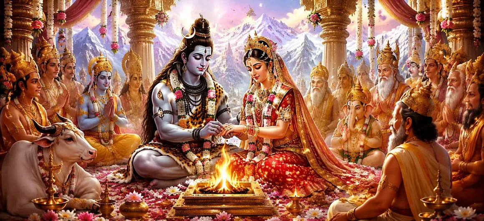

This sacred chapter narrates the divine marriage of Lord Shiva and Goddess Sati, the daughter of Prajapati Daksha. Their union was not merely a worldly marriage but the eternal reunion of Purusha and Prakriti, the Supreme Consciousness and Divine Energy. The celestial beings rejoiced as the universe witnessed a sacred bond that would shape many future events in the cosmic order.
From her childhood, Sati was deeply devoted to Lord Shiva. She constantly meditated upon Him and desired no other husband. Following the guidance of sages, she performed severe penance and worship with unwavering faith. Her austerities pleased Lord Shiva and drew the attention of the gods, who recognized the divine purpose behind her devotion.
The gods understood that the union of Shiva and Sati was necessary for the welfare of creation. They approached Lord Shiva with reverence and requested Him to accept Sati as His consort. Lord Shiva, who had remained detached from worldly affairs, accepted their request after recognizing Sati’s purity, devotion, and divine nature.
When Prajapati Daksha learned of Shiva’s acceptance, preparations for the divine wedding began. Sages, gods, celestial musicians, and heavenly beings gathered to witness the sacred ceremony. Although Daksha respected Shiva’s greatness, traces of pride still lingered within his heart, setting the stage for future conflict.
Lord Shiva arrived with His divine attendants, ganas, sages, and celestial beings. The marriage was performed according to sacred Vedic rites. The heavens showered flowers, divine music echoed through the skies, and all the worlds celebrated the union. Shiva and Sati became the ideal embodiment of spiritual harmony, devotion, and cosmic balance.
Sincere devotion and perseverance can attract divine grace and fulfill the highest spiritual aspirations.
The marriage symbolizes the eternal union of consciousness and divine energy.
The chapter subtly warns that pride can create future suffering even amid divine blessings.
The marriage of Shiva and Sati brought joy to gods, sages, and celestial beings. Their union was regarded as a blessing for all creation, ensuring harmony between divine forces that sustain the universe.
Though the wedding was glorious, it also marked the beginning of events that would later reveal the consequences of pride, devotion, sacrifice, and divine justice. The story continues to unfold in the subsequent chapters of Shiva Purana.
The marriage of Shiva and Sati reminds us that true spiritual union is achieved through devotion, purity, and surrender to the Divine. When faith remains steadfast, divine grace naturally follows and transforms life into a sacred journey.
After the sacred marriage ceremony was completed, the gods, sages, and celestial beings offered their blessings to Shiva and Sati. Brahma praised the divine couple as the embodiment of creation and spiritual wisdom, while Vishnu glorified their union as the foundation of cosmic harmony. The heavenly assembly rejoiced, knowing that this sacred marriage would benefit all worlds and uphold dharma throughout the ages.
Following their marriage, Shiva and Sati began their divine life together. Though Lord Shiva remained detached from worldly desires, He lovingly accepted Sati as His eternal companion. Their relationship became an example of mutual respect, devotion, and spiritual unity. Through their sacred companionship, they demonstrated how divine love transcends material attachments and guides souls toward higher truth.
"Where devotion meets divine grace, the eternal union of Shiva and Shakti shines forth."
Continue exploring the sacred story of Goddess Sati and Lord Shiva. Discover the divine preparations that led to their marriage and the spiritual glory of their eternal union.